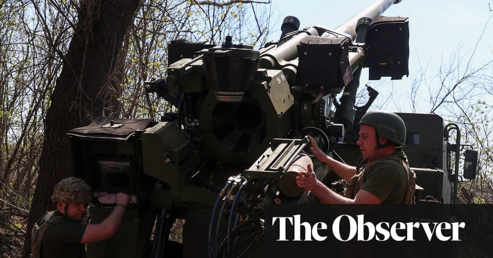

世界苦茶04月20日新闻 | 34条 | 中国三月财政收入和使用外资继续下跌

中国三月财政收入和使用外资继续下跌 | 美国务院称新冠为实验室泄漏 | 越南马来西亚采用中国商飞客机 | 美最高院阻止遣返委内瑞拉移民 | 欧盟推迟对美互联网业制裁
苦茶数据
美元兑人民币：7.30（昨日7.30，前日7.30）
美元兑日元：142.17（昨日142.38，前日142.57）
上证指数：休市（昨日3276，前日3266）
标普500指数：休市（昨日5282，前日5275）
比特币：85145（昨日84989，前日84600）
布伦特原油：67.96（昨日66.38，前日64.12）
中国新闻
• 美白宫指责中国泄毒 ：美国白宫改版冠病官方网站，把冠病病毒的源头直接归于中国实验室泄漏，称之为冠病疫情的“真正源头”。这个网站此前以推广冠病疫苗接种和病毒检测的资讯为重点，如今改而展示总统特朗普的照片，并批评前总统拜登任内的疫情应对政策。白宫星期五发布改版后的Covid.gov网站，还点名批评美国国家过敏症和传染病研究所前所长福奇，指责他推动了“冠病病毒自然起源”的官方叙事。
• 中马合作引进中国飞机 ：中国国家主席习近平对马来西亚进行国事访问期间，中国与马来西亚发布联合声明，明确提到“支持马来西亚的航空公司引进和运营中国商用飞机”。据悉，马来西亚航空公司正考虑购买中国研制的大型客机，包括C909、C919及研发中的C929。《中国报》引述《财经网》的报道说，马中声明中所指的中国商用飞机，主要指的是中国商飞公司生产的C909和C919飞机。目前C909支线客机已经出海三个东南亚国家，印尼、越南和寮国都有客户；C919干线飞机则在中国三大航服务于国内市场，最快2026年在海外取得突破。作为马来西亚最大的国营航空公司，马航是否考虑购买中国商飞制造的C909和C919飞机，乃至正在研发中的C929飞机，成为焦点。
• 中扩大服务业开放试点 ：中国官方提出扩大试点范围，以推动服务业开放提速加力。中国商务部星期五在官网发布《加快推进服务业扩大开放综合试点工作方案》，提到在已有试点地区基础上，将大连、宁波、厦门、青岛、深圳、合肥、福州、西安、苏州等九个城市纳入试点范围。方案称，中国将加快试点实施节奏，将试点任务在符合条件的试点地区一体化推进，提升试点工作效率。各部门拟推出的涉及服务业的开放创新举措，优先在试点地区先行先试，开展压力测试。根据试点任务风险等级，及时在相应范围复制推广。
南海将进行军事演训 ：中国官方发布消息，将在南中国海部分水域进行为期三天的军事训练。据中国海事局网站消息，清澜海事局发布航行警告，星期天早上7时至下星期二早上8时，南中国海部分水域进行军事训练，禁止驶入。官方消息没有明确开展军事训练的具体地点。
• 公明党魁访华递信习近平 ：日本公明党党魁齐藤铁夫将在下周访华，届时会将日本首相石破茂致中国国家主席习近平的亲笔信转交给中国政要。据日本共同社报道，齐藤铁夫星期五在记者会上透露，他将在下星期二对华进行访问时，携带首相石破茂致中国国家主席习近平的亲笔信，并转交给中方政要。齐藤铁夫说，他计划在下星期一与石破茂会面并收下亲笔信，并强调“作为执政党之一，希望传达日本的想法”。
• 王毅表示，亚洲时刻来临 ：中国外交部长王毅在陪同中国国家主席习近平访问东南亚三国后说，全球化已进入“亚洲时刻”，世界的重心正在转向亚洲，中国则是重要引擎。据中国外交部网站，王毅介绍习近平访问越南、马来西亚和柬埔寨的访问情况时说，在单边主义、强权政治冲击世界的大背景下，此访以命运共同体建设为主线，聚焦睦邻友好、推动互利合作，取得圆满成功。他说，五天四夜时间里，习近平密集出席近30场活动，推动达成上百项合作成果，书写周边命运共同体建设新篇章，擘画中国同周边国家共促稳定繁荣新图景。
亚太印太新闻
• 蒋万安提倒阁引热议 ：台北市长蒋万安提议在立法院推动“倒阁”，引起朝野政党关注。尽管在野的国民党主席朱立伦不排除这一选项，但国民党内部对此仍意见分歧。综合《联合报》《中国时报》等台媒报道，蒋万安星期四晚出席国民党在台北地检署外举行的抗议活动时，提议主张用立法院改选对总统赖清德发起不信任投票。这一提议在朝野政党间引起关注，朱立伦星期五早上出席国民党立法院党团大会后说，任何对台湾民主有帮助、让独裁者下台的方式都不会排除，“也会跟其他在野党商讨”。
• 陈水扁再谈民主与包容 ：台湾前总统陈水扁说，民主的核心在于包容和尊重不同声音，清算绝不是对付在野势力的最好办法。综合台湾《联合报》《上报》报道，陈水扁星期六受邀至凯达格兰学校，以“台湾民主的韧性与转型”为题发表公开演说。陈水扁开篇就坦言，这是他睽违17年首度发表公开演讲，心情十分紧张，甚至当总统八年都没这么紧张过。他还语带感慨地说，担心这次会是他“第一次也是最后一次”公开演讲。
• 台拟购30架黑鹰直升机 ：台湾总统赖清德表态将向美国提出军事采购清单后，台湾陆军计划将向美国增购30架黑鹰直升机。赖清德4月6日就因应美国对等关税发表讲话时说，台湾国防部已向美国提出军事采购清单，“各项采购都会积极进行”。但赖清德没有透露采购清单的内容。综合台湾《联合报》《自由时报》报道，为强化陆航部队的打击战力，台湾陆军计划向美采购30架攻击型黑鹰直升机，同时将现役的通用型黑鹰直升机改装，使其具有发射地狱火导弹等武装设备的功能。
• 台公布产业支持方案 ：为应对美国关税政策，台湾行政院长卓荣泰说，政府下周将公布产业支持方案申请办法，让更多业者得到政府支持，并呼吁中央与地方、立法及行政、政府和民间共同合作，让业者在最短时间做最大调适。综合台湾《自由时报》和公视新闻网报道，卓荣泰星期六在新北市土城产业园区服务中心举行的产业座谈会上说，产业支持方案的申请条件、时程等细节预计将在下星期一对外公布，关键在于放宽申请条件等，让更多人得到应有的支持。他说，行政团队近日密集与总统赖清德报告，希望在最短时间，协助企业做最大调适，方案除因应短期状况，也会提出中长期经济发展目标，协助高科技业海外布局、中小微企业双轴转型，并希望透过社会共同讨论，让水电、人才提供各方面，政府民间能更有共同目标。
• 日舰首次停靠柬埔寨 ：两艘日本海上自卫队军舰于星期六停靠柬埔寨云壤海军基地。这是基地在中国协助下翻修后首批停靠的军舰。停靠云壤海军基地的是日本海上自卫队“丰后”号和“江田岛”号舰艇。日本驻金边大使馆在发给媒体的声明中说，这是“具有历史意义的事件”。法新社引述声明说，“我们了解柬埔寨王国政府一直愿意向所有国家开放基地”，并补充说，此次访问将“增进信任和信心”。美国认为，位于柬埔寨南部海岸附近的云壤海军基地可能使中国在暹罗湾附近拥有关键的战略地位，此区域靠近存在争议的南中国海。
科技新闻
• 华为AI芯片被指仍用台积电 ：中国科技巨头华为推出的最新人工智能处理器据报使用了台积电晶片，但台积电否认有向华为供货。华为计划在今年量产最新AI处理器昇腾910C。英国《金融时报》今年2月曾报道，这款对标英伟达H100的晶片制造良率已升至40%，相比一年前的20%已翻了一倍。科技网站Wccftech星期三报道，半导体分析机构SemiAnalysis发布报告指出，虽然华为昇腾910C对外宣称是中国制造，但现实是华为仍严重依赖海外技术，如三星的高频宽记忆体、台积电的晶片以及来自美国、日本的制造设备。
• 欧盟推迟对科技巨头惩罚 ：欧盟最近推迟了对苹果和Meta的处罚，暂时避免了与美国政府发生冲突。就在本周，欧盟正加紧推动与美国达成贸易协议。知情人士称，欧盟委员会最初计划在周二宣布针对这些科技巨头的停止侵权令，并已将该时间安排告知了至少其中一家公司。推迟宣布该决定的时间点，是在欧盟贸易专员塞夫乔维奇本周一在华盛顿与美国官员会晤前不久做出的。这些裁决预计仍将进行，但目前尚不清楚推迟可能会持续多久。周二被问及这些案件时，欧盟委员会发言人说，尚未宣布任何日期，但技术工作已经完成。“我们目前正在努力，以期在短期内通过最终决定。”
• 新模型幻觉频发待研究 ：OpenAI 近期推出的 o3 和 o4-mini 模型在多个方面展现出业内领先的水准，不过，这两款模型依然无法摆脱 “幻觉” 问题，甚至比以往发布的模型更加严重。根据OpenAI的内部测试，作为推理模型的o3 和 o4-mini比前代推理模型o1、o1-mini 和 o3-mini甚至非推理模型出现幻觉的频率更高。OpenAI在针对这两款模型发布的技术报告中表示：“要弄清楚随着推理模型规模的扩大，幻觉问题为何反而变得更加严重，还需要进一步研究。”尽管 o3 和 o4-mini 模型在编程和数学等任务上的表现优于以往，但由于模型输出的答案总量增加，导致其既能作出更多准确判断，同时也不可避免地出现更多错误甚至幻觉。
• 北极海冰面积创最小值 ：日本机构3月观测到的卫星观测数据显示，今年北极海冰最大面积为1379万平方公里，但这一数据为日本1979年有卫星观测以来的最低值。新华社报道，日本宇宙航空研究开发机构和国立极地研究所星期五联合发布新闻公报说，北极海冰面积在每年10月至次年3月的冬季期间持续扩大，通常到3月达到一年的最大值。利用日本水循环变动观测卫星“水滴”号搭载的高性能微波辐射计2号等的观测数据，两家机构的研究人员分析北极海域的海冰分布情况，发现3月20日海冰面积达到1379万平方公里，为今年最大面积。通过对比40多年间的观测数据，研究人员发现此前记录的历史同期这一数据最低值为2017年3月5日的1392万平方公里，今年数据创下新低。研究人员经过分析认为，今年北极海冰最大面积创下历史新低的原因之一，是2024年12月至2025年2月北极和周边海域气温比往年偏高。
财经新闻
• 日本考虑增加美农进口 ：据日本《读卖新闻》报道，日本首相石破茂领导的日本政府考虑将增加美国大米和大豆进口用作与美国总统特朗普政府谈判的潜在筹码。彭博社引述《读卖新闻》星期六的报道称，在本周的贸易谈判中，华盛顿批评日本的出口限制及大米分销机制，称日本过于严格且缺乏透明度。《读卖新闻》称，美国还呼吁日本增加肉类、海鲜和土豆等其他农产品的进口。日本首席谈判代表赤泽亮正本周开始与美国财长贝森特、贸易代表格里尔等对口官员磋商，以期获得关税豁免。与大多数其他国家一样，日本获得美国暂缓加征24%全面关税的90天宽限期，但10%的基线关税以及对汽车、钢铁和铝的25%关税仍在生效中。
• 华尔街下调股指预期 ：过去两周，对贸易战可能造成的经济影响担忧加剧，华尔街银行纷纷下调对美国主要股指的目标，调降幅度超出冠病疫情时候。彭博社的调查显示，华尔街对标普500的年底预期平均水平，从去年底的6539点，下修到6047点，降幅7.5%。相比下，2020年2月至3月疫情暴发初期，标普500预测水平只调低5%。接受彭博社调研的21名分析师中，已有13人调低预测。
• 外资增持中国债券2700亿 ：中国官方数据显示，今年以来，外资机构在中国持有的债券增加逾2700亿元人民币。新华社星期五引述中国央行消息报道，截至4月15日，境外机构在中国持有债券总量为4.5万亿元，较上年末增加2700多亿元。中国央行的数据显示，目前境外投资者持债量占比仅有2.4%，意味着这一领域仍具有很大的增长空间。
• 国产C909开启越南运营 ：中国国产商用飞机C909星期六在越南开启商业运营。据央视新闻报道，由成都航空湿租给越捷航空的两架C909飞机星期六正式开通“河内-昆岛-胡志明”航线，标志着中国商用飞机在越南开启商业运营。湿租是一种国际通行的飞机租赁方式，出租方不仅提供飞机，还提供机组人员、安全管理、维修保障以及运行控制等方面的支持。针对越捷航空湿租C909飞机，出租方成都航空成立专项团队，推进各项准备工作，并利用其C909飞机运行经验，保障飞机在越顺畅运营。
• 德总理警告中货冲击 ：德国候任总理默茨警告，随着中美贸易战持续，德国可能会被更加便宜的中国商品“淹没”。据德国之声报道，默茨星期五接受德国丰克媒体集团采访时警告，必须意识到，德国将会遭遇中国产品更加严重的冲击，未来每天可能会有超过40万个来自中国的小包裹运抵德国的千家万户。默茨强调，德国必须尽快让一切都重回正轨，以保障消费者权益、健康和产品安全，欧盟委员会必须立刻对中国商品涌入欧盟市场的风险作出反应。
• 中船协反击美方制裁 ：中国船舶工业行业协会针对美国对中国造船业实施限制发表声明，称相信中国政府将采取强有力反制措施，捍卫中国船舶工业发展利益。据中国船舶工业行业协会微信公众号消息，该协会星期六对美国限制措施表示极度愤慨和坚决反对，指美方基于虚假指控和失实调查，对中国船舶工业进行无理打压，是公然践踏国际贸易规则的，严重破坏全球海事工业协同发展。中国船协指出，美国对中国造船业进行限制，将不可避免的扰乱全球海事工业体系，不但对恢复美国造船业毫无益处，甚至将直接导致国际海运成本飙升，同时也会进一步加剧其国内通胀困境，损害美国民众基本生活权益。
• 美拟设组应对中关税 ：美国媒体报道，由于美国对中国商品加征高额关税可能导致供应链紧张，特朗普政府计划组建一个工作小组，以便在未能与中国政府谈判取得突破的情况下，紧急处理对华关税的影响。美国哥伦比亚广播公司星期六引述知情人士报道，上述工作小组的成员可能包括：副总统万斯、财政部长贝森特、商务部长卢特尼克、国家经济委员会主任哈塞特、总统经济顾问委员会主席米兰以及美国贸易代表格里尔。目前有关设立工作小组的具体情况还未敲定，但一名官员说，特朗普政府早已着手准备应对供应链问题，以应对关税实施可能带来的影响。
• 德研报警告欧盟巨额损失 ：德国经济研究所的研究报告显示，未来四年内，美国“对等关税”措施可能令德国损失2900亿欧元、欧盟损失1.1万亿欧元。新华社报道，德国经济研究所日前发布的研究报告说，美国所谓对等关税措施带来全球贸易战风险，将对全球经济造成广泛负面影响。研究所测算，对等关税将导致德国经济在2025年至2028年间累计直接损失约2000亿欧元，相当于平均每年损失GDP的约1.2%；考虑到贸易伙伴采取反制措施，德国经济损失总额将扩大至2900亿欧元。对欧盟整体而言，四年累计损失可能高达1.1万亿欧元。
• 中国外资降幅收窄 ：中国一季度吸引外资金额同比下降10.8%，跌幅收窄。中国商务部星期五在官网公布，今年前三个月，全国新设立外商投资企业1万2603家，同比增长4.3%；实际使用外资金额2692.3亿元人民币，同比下降10.8%。3月当月实际使用外资同比增长13.2%。中国今年前两个月的实际使用外资金额逾同比下降20.4%，跌幅已大幅收窄。
• 中方吁金砖拒单边霸凌 ：中国外交部副部长马朝旭说，金砖国家作为新兴市场和发展中国家团结合作的最重要平台，应该共同抵制单边霸凌行径，维护多边贸易体制。据中国外交部网站消息，马朝旭星期五在北京集体会见金砖成员国和伙伴国驻华使节时，就美国关税阐述中方政策立场，称美国在全世界滥施关税，发起关税战、贸易战，是典型的单边主义、保护主义和经济霸凌，严重侵犯各国正当权益，严重违反世界贸易组织规则，严重冲击全球经济秩序。他说，金砖国家作为新兴市场和发展中国家团结合作的最重要平台，应该加强团结，携手应对，共同抵制单边霸凌行径，维护多边贸易体制，捍卫国际公平正义。
• 一季度财政收入降幅减缓 ：中国前三个月财政收入降幅有所放缓，支出进度进一步加快。中国财政部星期五在官网公布数据显示，一季度全国一般公共预算收入约6万亿元人民币，同比下降1.1%，降幅比前两个月收窄0.5个百分点。其中，3月份的财政收入增长0.2%，月度增幅由负转正。 （翻评：对于下降的指标，降幅收窄是一个“光明论”的访拿公法，单看一个月意义不大，要看整体的情况。）
俄乌战争
• 美促乌俄和平协议 ：美国向盟国提出促成乌克兰和俄罗斯达成和平协议的建议，其中包括停战条款大纲以及在持久停火的前提下放松对莫斯科的制裁。与此同时，美国国务卿卢比奥星期五暗示，若无迅速进展特朗普政府就准备“放弃”和平努力。不过副总统万斯同一天在罗马说，他对结束战争的可能性感到乐观。彭博社引述知情欧洲官员说，美国星期四在巴黎举行的会议上讲述自己的和平计划大纲。
• 美或承认克里米亚归俄 ：知情人士透露，作为俄罗斯与乌克兰更广泛和平协议的一部分，特朗普政府准备承认俄罗斯对乌克兰克里米亚的控制。彭博社报道，这一潜在让步凸显出美国总统特朗普急切希望敲定俄乌停火协议。这对俄罗斯总统普京来说是一个好消息，普京长期以来一直寻求国际社会承认俄罗斯在克里米亚的主权。特朗普和国务卿鲁比奥星期五先后表明，除非俄乌和平谈判能迅速取得明显进展，否则美国将放弃斡旋的努力。
• 普京宣布复活节停火 ：俄罗斯总统普京4月19日宣布在东正教复活节期间停火30个小时。停火时间为莫斯科时间19日18时至21日0时，期间俄军将暂停所有军事行动。普京认为乌克兰将效仿俄罗斯，但俄军须准备应对可能的违反停火、敌人挑衅等行为。乌克兰总统泽连斯基称，空袭警报正在乌克兰各地拉响，乌克兰领空的自杀式无人机揭示了普京对复活节和人类生命的真实态度。但如果俄罗斯真正准备好无条件全面停火，乌克兰将采取相同做法，仅进行防御性打击。
• 泽连斯基称，尽管“复活节停火”，俄罗斯仍在向乌克兰开火： 泽连斯基表示，尽管克里姆林宫宣布复活节停火，但俄罗斯炮火周六仍在乌克兰境内持续燃烧。“截至目前，根据总司令的报告，俄罗斯在多个前线地区仍在继续进攻，而且俄罗斯的炮火尚未减弱，”这位乌克兰总统在X频道发帖称。“因此，莫斯科的言论不可信。”他回忆说，俄罗斯上个月拒绝了美国提出的为期30天的全面停火方案，并表示，如果莫斯科同意“真正采取全面、无条件的沉默形式，乌克兰将采取相应行动——效仿俄罗斯的行动”。
其他新闻
• 以色列或打击伊朗核设 ：路透社引述以色列官员和知情人士报道，以色列尚未排除在未来几个月里袭击伊朗核设施的可能性。以色列官员告诉路透社，他们的军队有可能对伊朗发动不太需要美国支持的有限打击。在核协议谈判刚刚开始的情况下，目前不清楚以色列是否会推进此类打击，以及何时会推进。路透社引述两名前拜登政府高级官员的话说，部分计划已于去年提交给拜登政府。几乎所有计划都要求美国通过直接军事干预或情报共享提供大量支持。以色列还请求华盛顿在伊朗进行报复时协助它自卫。
• 美伊举行第二轮间接谈判 ：美国中东问题特使威特科夫和伊朗外交部长阿拉格齐4月19日在阿曼驻开罗使馆举行第二轮间接谈判。阿拉格齐称，谈判取得进展，伊美双方技术团队将于23日启动专家级谈判，“专家将深入探讨细节，为协议框架制定方案”。他和威特科夫将于26日在阿曼再次谈判，双方将“评估专家工作成果，并衡量是否能够达成协议”。美国官员称，威特科夫和阿拉格齐进行了面对面交谈。各方在讨论中取得了很大进展。阿拉格齐近日访问俄罗斯，会见俄总统普京等官员，期待俄罗斯在未来的协议中继续发挥支持作用。俄罗斯外长拉夫罗夫表示，俄罗斯愿意提供调解并协助核谈判。
• 五角大楼解雇三官员 ：据新闻网站“政治”报道，在一起泄密调查展开之际，五角大楼解除三名官员职务，国防部长海格塞斯的幕僚长将调岗。报道称，国防部星期五解雇的三人分别是资深顾问丹·考德威尔、海格塞斯的副幕僚长达林·塞尔尼克，以及副国防部长斯蒂芬·范伯格的幕僚长科林·卡罗尔。这三人都在本周早些时候被要求行政休假。
• 美高院临阻遣返委移民 ：美国最高法院4月19日以7票赞成、2票反对的结果，临时禁止美国政府根据18世纪战时制定的《外国敌人法》驱逐在得克萨斯州北部拘留中心关押的委内瑞拉移民。最高法院9日曾下令政府需要给予被驱逐人员时间和机会辩护。科罗拉多州、纽约州和得克萨斯州南部的联邦法官已经下达命令，禁止政府在没有法律程序的情况下使用《外国敌人法》驱逐委内瑞拉移民。但在得克萨斯州北部，尚未有此类命令发布。美国公民自由联盟的律师在18日的紧急上诉中表示，美国政府在联邦法官裁决后将移民从得州南部的拘留中心转移到了没有此类禁令的得州北部。律师表示，目击者称，这些移民18日晚间被装上巴士，准备送往机场。律师提交多份证据，表明美国政府计划于19日遣返数名委内瑞拉移民。